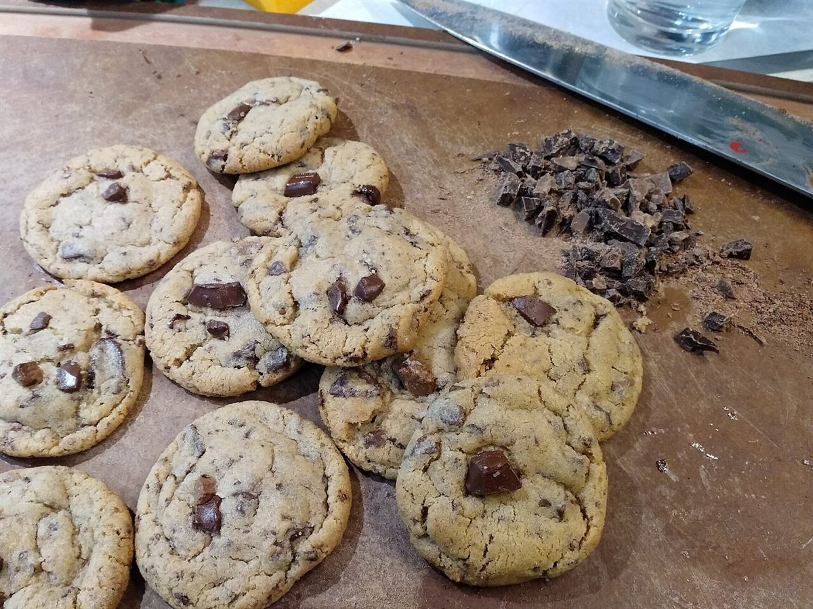

メニュー
メニュー(準備中)
メニューの内容・価格は準備中です。確認できた内容を、のちほどこのページに掲載します。以下の写真は、パンやコーヒーのフリー素材のイメージです。
| メニュー | 準備中 |
|---|---|
| 価格 | 準備中 |
写真帯(イメージ)
パンと焼き菓子のイメージ




写真はイメージです。お店のメニューを示すものではありません。
図の凡例
六つの部位
- 1ふた本体の口をふさぐ丸い蓋。中の氷を覆う部分。
- 2取っ手本体の両わきに付く、持ち運ぶためのリング状の握り。
- 3外壁本体の外側を形づくる、まるい胴の壁。
- 4断熱層外壁と内槽のあいだにある、冷たさを保つための空間。
- 5内槽氷そのものを受け止める、内側の入れもの。
- 6トング氷をつまむための、バネ付きのはさみ道具。